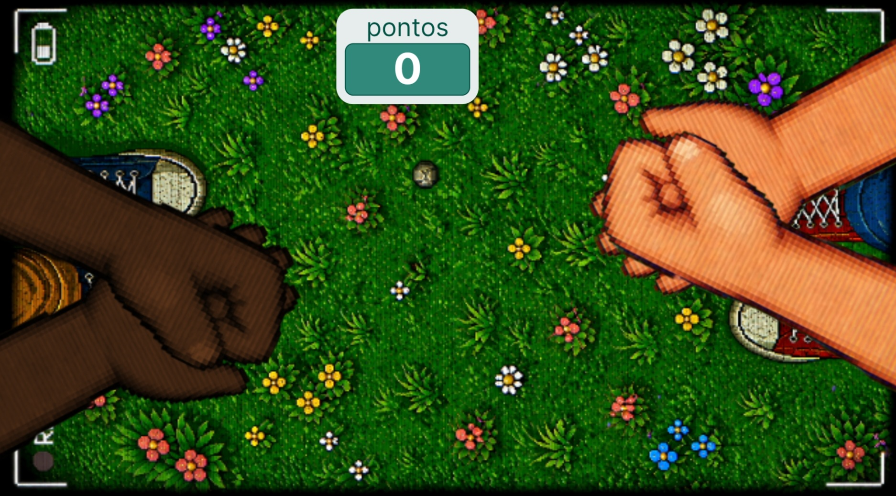

Pedra, Papel Tesoura
Criador: Erick Alves
Jogue pedra, papel e tesoura agitando o seu dispositivos!
Baixar Jogo🕮 GUIA
O jogo 'Pedra, Papel ou Tesoura' é o clássico jogo infatil que todos já conhecem. O jogador agita o dispositivo para alternar entre as opções e toca na tela para escolher, e então agita mais algumas vezes para saber o resultado contra o bot. Um jogo simples e divertido!